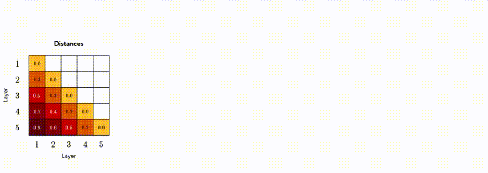

Abstract
Sparse Autoencoders (SAEs) have recently been employed as a promising unsupervised approach for understanding the representations of layers of Large Language Models (LLMs). However, with the growth in model size and complexity, training SAEs is computationally intensive, as typically one SAE is trained for each model layer. To address such limitation, we propose Group-SAE, a novel strategy to train SAEs. Our method considers the similarity of the residual stream representations between contiguous layers to group similar layers and train a single SAE per group. To balance the trade-off between efficiency and performance, we further introduce AMAD (Average Maximum Angular Distance), an empirical metric that guides the selection of an optimal number of groups based on representational similarity across layers. Experiments on models from the Pythia family show that our approach significantly accelerates training with minimal impact on reconstruction quality and comparable downstream task performance and interpretability over baseline SAEs trained layer by layer. This method provides an efficient and scalable strategy for training SAEs in modern LLMs.
Group-SAE
Group-SAE is a novel technique that reduces the computational demand for training a suite of SAEs for a given model. We group model layers by the cosine similarity of their activations and train a single SAE per group.
Grouping strategy
Our grouping strategy consists of four steps:
- We cache 10M activations for each layer of the model from tokens of its training dataset.
- We compute the average cosine distance for each pair of layer. From this process, we obtain a distance matrix.
- We apply hierarchical clustering on the distance matrix to obtain the partitions in $g=1,…,G$ groups.
- The last step consists of computing the AMAD, the average maximum angular distance of groups, for each partition.

Given the AMAD computed at step 4., one can choose the optimal number of groups $\widehat{G}$ as:
\[ \widehat{G} = \min \{G \in \{1, ..., L-1\} \mid \text{AMAD}(G) < \theta \} \]
Intuitively, when $G$ is small, each group aggregates distant layers, increasing AMAD; conversely, when $G=L$ (one group per layer), AMAD becomes zero but no computational savings are achieved. The goal is therefore to select the smallest $G$ such that the groups remain sufficiently homogeneous, i.e., AMAD$(G)$ stays below a target threshold.
By training Group-SAEs for different models and values of G, and plotting performance metrics against AMAD (see figure below, Figure 2 in the paper), we identify an optimal threshold around $\theta^* \approx 0.2$, beyond which reconstruction performance degrades more rapidly.
$\text{FVU}$ (left) and $\Delta\text{CE}_{\%}$ (right) over $\text{AMAD}(G)$ for every $G \in {1, . . . , L − 1}$. The highlighted star markers represent the baseline SAEs (i.e., with no grouping), while the other points correspond to Group-SAEs, ordered from left to right by increasing AMAD, which reflects a decrease in the number of groups. The shaded area indicates one std.
SAE training
We train both SAEs and Group-SAEs using Top-$K$ activation with $K=128$ and expansion factor of
$c=16$ on
the residual stream after the MLP contribution of three models of varying sizes from the Pythia
family : Pythia 160M, Pythia 410M, and
Pythia
1B.
The reconstruction objective is the Fraction of Variance Unexplained (FVU) , i.e.:
$$
\text{FVU}(\mathbf X, \widehat{\mathbf
X})=\frac{\lVert\mathbf{X}-\widehat{\mathbf{X}}\rVert_F^2}{\lVert \mathbf{X} -
\overline{\mathbf{X}} \rVert_F^2}
$$
where $\mathbf X, \widehat{\mathbf X}, \overline{\mathbf{X}} \in \mathbb R^{B \times n}$ represent a batch of activations
SAE reconstructions, and average batch activations, respectively.
The total loss is then:
$$
\mathcal L(\mathbf X)=\text{FVU}(\mathbf X,\widehat{\mathbf
X})+\alpha_{\text{aux}}\cdot\text{AuxK}(\mathbf X,\widehat{\mathbf X})
$$
with $\alpha_{\text{aux}}=\tfrac{1}{32}$ and $\text{AuxK}(\mathbf X,\widehat{\mathbf X})$ is the
auxiliary loos function defined in .
To train all the SAEs, we sample 1 billion tokens from the Pile
dataset .
For Group-SAEs, activations in each batch are randomly drawn from the layers within the
target group, so that every SAE (baseline and group) processes exactly 1B tokens.
Comparison with baselines
We compare our method against two baselines:
- Evenly spaced SAEs: instead of grouping with AMAD, we train Group-SAE on evenly-spaced groups.
- Smaller SAEs: for all layers, we train standard SAEs with a lower expansion factor.
| Approach | Pythia-160M | Pythia-410M | Pythia-1B | |||
|---|---|---|---|---|---|---|
| FVU | $\Delta\text{CE}_{\%}$ | FVU | $\Delta\text{CE}_{\%}$ | FVU | $\Delta\text{CE}_{\%}$ | |
| Group SAEs (AMAD with $\widehat{G}$ groups) | 0.108 (+6.1%) | 6.01 (+18.5%) | 0.138 (+5.5%) | 5.94 (+16.3%) | 0.182 (+3.2%) | 6.43 (+20.6%) |
| Group SAEs (Evenly spaced with $\widehat{G}$ groups) | 0.114 (+0.9%) | 5.40 (+26.7%) | 0.145 (+0.7%) | 6.01 (+15.4%) | 0.189 (-0.5%) | 6.63 (+18.1%) |
| Smaller SAEs (All layers, same PFLOPs) | 0.115 (+0.0%) | 7.37 (+0.0%) | 0.146 (+0.0%) | 7.10 (+0.0%) | 0.188 (+0.0%) | 8.10 (+0.0%) |
Efficiency Improvements
The computational cost, in FLOPs, of training a SAE can be divided into two main components:
- Activation caching (A): FLOPs required to generate the model's activations, which are used for training the SAE.
- SAE Training (T): FLOPs involved in optimizing a single SAE using the cached activations.
Thus, the total cost of training SAEs across all residual stream layers of a model is given by $A + L\,T$. Since both baseline and Group-SAE share the same architecture and undergo the same training process for a single SAE, the total cost of training all Group-SAEs is $A + G\,T$.
The resulting compute savings, $\Delta(G)$, quantifying the relative change in total FLOPs when applying Group-SAEs instead of per-layer SAEs, is defined as:
\[\Delta(G) = 1 - \frac{A + G\,T}{A + L\,T}.\]
Since our method does not alter either $A$ or $T$, the efficiency gains of Group-SAEs are primarily determined by the $G/L$ ratio. The table below shows performance improvements of Group-SAE for each model when training a full suite of SAEs.
| Model | $\widehat G$ | $A+L\,T$ | $A+\widehat G\,T$ | $\Delta_{\%} (\widehat G)$ |
|---|---|---|---|---|
| Pythia 160M | 6 | 1.34 | 0.77 | +42.5% |
| Pythia 410M | 9 | 4.73 | 2.21 | +53.3% |
| Pythia 1B | 6 | 12.48 | 5.77 | +53.7% |
Comparison of FLOPs (1018) required for caching activations and training Baseline and Group SAEs on 1B tokens, covering all layers with an expansion factor of 16 and Ĝ = min { G | AMAD(G) < 0.2 }.
References
BibTeX
@inproceedings{
ghilardi2025efficient,
title={Efficient Training of Sparse Autoencoders for Large Language Models via Layer Groups},
author={Davide Ghilardi and Federico Belotti and Marco Molinari and Tao Ma and Matteo Palmonari},
booktitle={The 2025 Conference on Empirical Methods in Natural Language Processing},
year={2025},
url={https://openreview.net/forum?id=bk4PhF17cm}
}